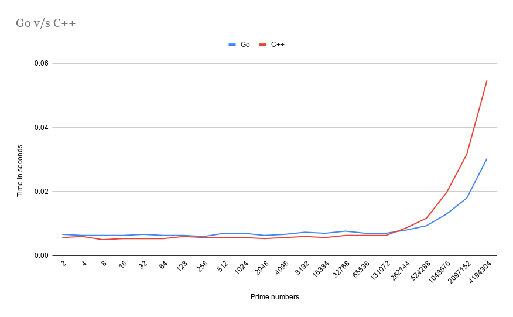

Written by
Sukeesh
on
on
Go vs C++ | Which is faster? | Sieve of Eratosthenes
Follow @sukeesh Follow @sukeeshbabu
Comparing a Sieve of Eratosthenes in Golang vs C++! (Two of my most favourite programming languages)
Sieve of Eratosthenes

The intention of this post is not to explain the algorithm. You can read more about it here.
Code
Code Implementation in both the languages
Golang
C++
Hardware
- MacBook Pro (15-inch, 2018)
- Processor 2.9 GHz 6-Core Intel Core i9
- Memory 32 GB 2400 MHz DDR4
Results!
I tested this code using the time function in a zsh shell.
Example usage of time function
$ time ./a.out 4194304
./a.out 4194304 0.05s user 0.00s system 95% cpu 0.057 total
I tested by generating [2, 4, 8, 16, 32, …. , 4194304] Prime numbers in both the programming languages. Here is how they performed.
Until 131072, C++ was performing slightly better than Go. But, later Go started dominating and the curve went exponential.
